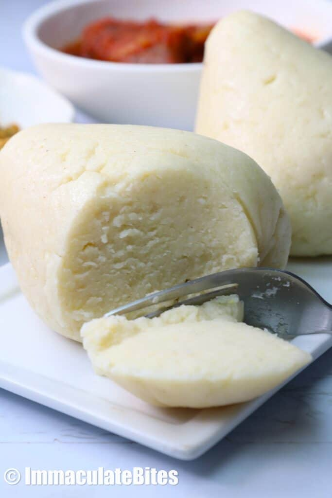

Ugali simple recipe.

What is ugali?
Ugali is a thick porridge made from white maize meal cooked in water or milk until it becomes a thick dough. A piece of ugali serves as a spoon. Make a dent in the middle (swallow), and spoon a bite of draw soup (ogbono and okra soup are two examples).
This bland side dish is delightful with greens, stews, or protein. And it doesn’t overpower your delicious stew.
Ingredients
This is what you are gonna need
- Water: I don’t usually list water as an ingredient, but it’s essential for cooking the cornmeal. And you’ll need a pinch of salt.
- Cornmeal: Perfectly ground maize corn is readily available in Africa, but it’s another ball game abroad. Look for finely ground white cornmeal or yellow cornmeal. Corn flour or maize flour should also be available at ethnic grocery stores.
How to make ugali;
- Boil: Add about 4 cups of water to a large heavy-bottomed saucepan. Add ½ teaspoon of salt. Bring to a boil, remove a cup of water, and set aside.
- Add Cornmeal Stir in the cornmeal a little at a time with a wooden spoon until it’s all in the pot. Keep stirring to prevent lumps. To avoid burning, you may have to take the saucepan off the heat while removing lumps.
- Reduce heat: and cook on low until the mixture thickens.
- Final Stretch:dd the remaining boiled water, reduce the heat, cover, and simmer for 10 more minutes. Add some more water if it looks like it needs it. Turn off the heat.
- Serve: Scoop out balls of the ugali mixture with a small bowl. Roll it into a ball by rolling it around the bowl. Or shape it by wrapping it in a plastic wrap.
Note:Several have told me that wrapping it in plastic isn’t healthy. It’s up to you.